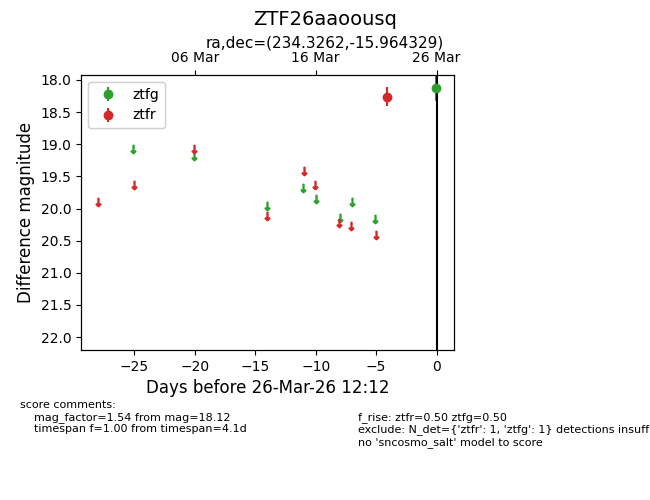
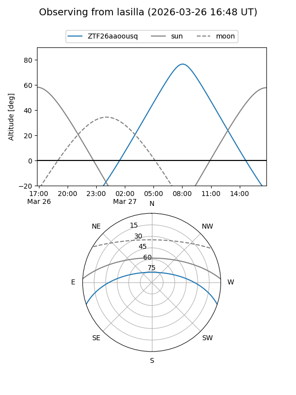
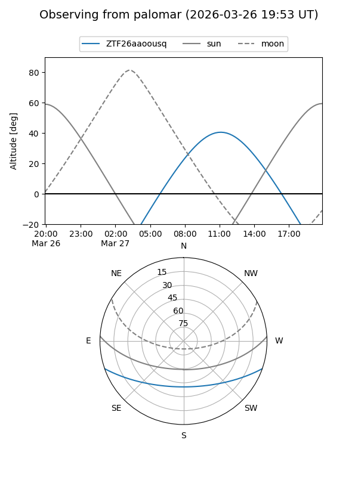

ZTF26aaoousq
Target ZTF26aaoousq at 2026-03-26 12:18
Aliases and brokers:
FINK: link
Lasair: link
ALeRCE: link
alt names
ZTF26aaoousq (ztf,fink_ztf)
Coordinates:
equatorial (ra, dec) = 234.3262,-15.96433
equatorial (HMS+DMS) = 15:37:18.28,-15:57:51.58
galactic (l, b) = (350.9293,+31.04899)
Flags:
Photometry:
last ztfg=18.12, ztfr=18.26
1 ztfg, 1 ztfr detections
Lightcurve

Visibility


Additional plots